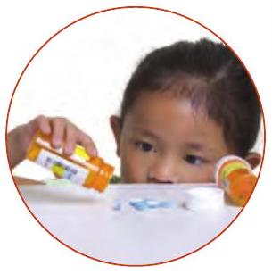
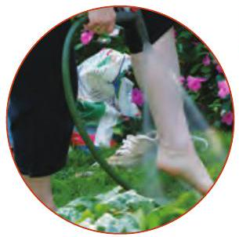
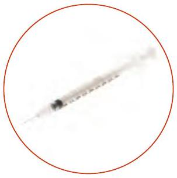
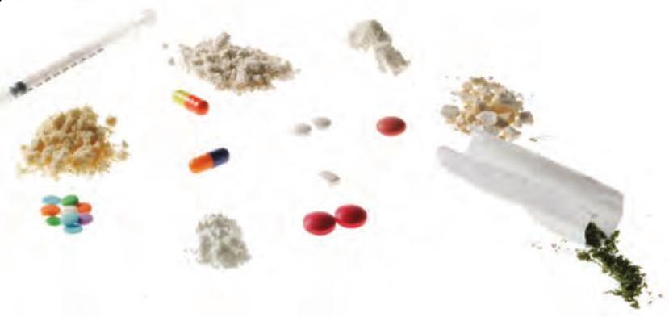
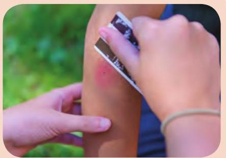
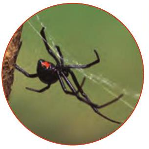
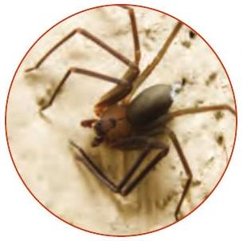
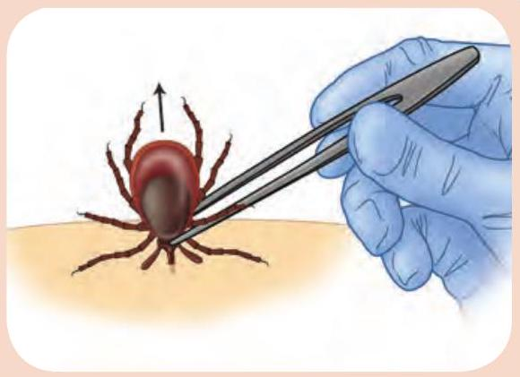
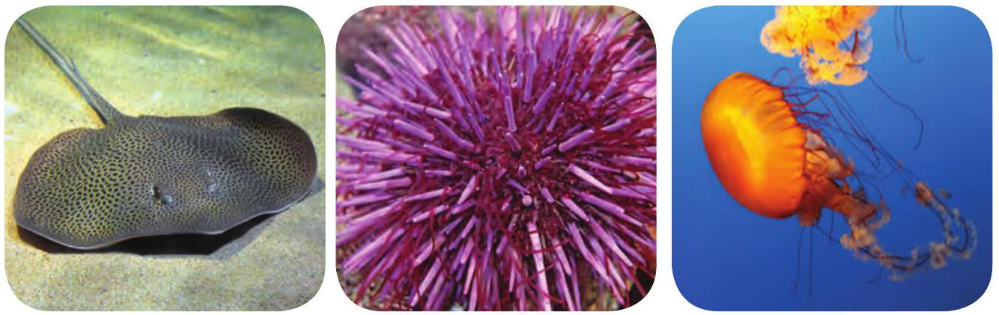

13 Poisons
Call
If the person has an altered level of responsiveness or has difficulty breathing, call EMS/9-1-1 and get an AED. Otherwise, call the Poison Control Centre.
Care
The specific care depends on the type of poison. Follow these general guidelines, along with any instructions from the Poison Control Centre or EMS dispatcher. Always use PPE when caring for a poisoned person so that you don't come into contact with the poison.
Swallowed
WHAT TO LOOK FOR
- An open container of poison nearby
- Burns around the mouth
- Increased production of saliva and/or saliva that is an abnormal colour
- Abdominal cramps, vomiting, and/or diarrhea
- A burning sensation in the mouth, throat, or stomach
CARE
- Check the packaging of the poison.
- Induce vomiting only if told to do so by the EMS dispatcher or the Poison Control Centre.
- If the person needs to go to the hospital, bring a sample of the poison (or its original container).
Inhaled
WHAT TO LOOK FOR
- Breathing difficulties
- Irritated eyes, nose, or throat
- Bluish colour around the mouth
- An unusual smell in the air
CARE
- Move the person into fresh air, but do not enter a hazardous atmosphere yourself to do so.
Absorbed
WHAT TO LOOK FOR
- Rash or hives
- Burning or itching skin
- Blisters
- Burns
CARE
- If the poison is a dry powder, brush it off the person's skin, being careful to avoid touching it.
- Remove any clothing covered in the poison.
- Flush the skin with running water for at least 15 minutes. Make sure the water flushes away from any unaffected areas of the body.
Injected
WHAT TO LOOK FOR
- One or more puncture wounds
- Problems breathing
- Redness and swelling at the entry point
- A needle found nearby
CARE
- Wash the puncture site with clean running water.
- Keep the person still.
Carbon Monoxide Poisoning
Carbon monoxide (CO) is a gas that has no smell, colour, or taste. It is released when fuel is burned (e.g., in a car engine, fireplace, or furnace) without proper ventilation. Concentrated CO is poisonous and life-threatening to those who inhale it.
What to Look For
Signs and symptoms include the following:
- Headache
- Dizziness or light-headedness
- Confusion or altered level of responsiveness
- Weakness or fatigue
- Muscle cramps
- Nausea and vomiting
- Chest pain
Care
- Treat the person for inhaled poisoning.
Poisonous Plants
Poison Ivy, Sumac, and Oak
Poison ivy, poison sumac, and poison oak produce oil that causes skin irritation in most people.
What to Look For
- Itchy skin
- Reddening of the skin
- Bumps or blisters
Care
- Encourage the person to apply a cream or ointment designed to reduce itching and blistering (e.g., calamine).
- Suggest that the person take an oral antihistamine to help relieve itching.
- If the rash is severe or on a sensitive part of the body (such as the face or groin), the person should see a healthcare provider.
Giant Hogweed and Wild Parsnip
What to Look For
The sap of these plants causes the following signs and symptoms when skin is exposed to sunlight:
- Swelling and reddening of the skin
- Painful blistering
- Purplish scarring
Call
Call EMS/9-1-1 if the person is having trouble breathing or if the sap is on the eyes, face, or groin.
Care
- Protect the area from sunlight.
- If sap gets into the eyes, rinse them thoroughly with water for at least 15 minutes or until EMS personnel arrive.
- Encourage the person to seek medical attention.
Other Types of Poisoning
Poisoning Caused by Alcohol or Drugs
Provide care based on the method the person used to take the drug (e.g., swallowed or injected).
Look for clues as to what drug was taken and give this information to EMS personnel when they arrive. Because drugs can significantly alter a person's perception and/or behaviour, you must be careful to protect yourself. If the person is aggressive, call EMS/9-1-1.
Opioid drugs, such as heroin and fentanyl, are a common cause of drug overdose. Opioid overdoses can cause respiratory failure and death. Naloxone is a drug used to quickly reverse the effects of an opioid drug overdose.
Insect Stings
Call
Call EMS/9-1-1 and get an AED if there are any signs of a severe allergic reaction.
Care
- If the stinger is still imbedded, scrape it away from the skin. 
- Wrap a cold pack in a thin towel and place it on the affected area.
- Continue to watch for signs of anaphylaxis.
Animal Bites
Call
Call your local animal control department if the animal is wild or a stray.
Care
- Try to get the person safely away from the animal. Do not try to capture it.
- Treat any wounds.
- Seek medical attention if the animal is stray or unknown to you or if you suspect it might have rabies.
- Watch for signs and symptoms of infection.
Spider Bites
Venomous spider bites in Canada are very rare and typically come from either a black widow or brown recluse spider.
Black Widow
WHAT TO LOOK FOR
- A raised, round, red mark
- Cramping pain in the thighs, shoulders, back, and abdominal muscles
- Excessive sweating
- Weakness
Brown Recluse
WHAT TO LOOK FOR
- A slight stinging sensation
- A blood-filled blister that appears within 2 to 8 hours
- A bull's-eye pattern around the bite
Signs and symptoms of a severe reaction occur within 72 hours of the bite and include nausea, vomiting, and joint pain.
Call
Call EMS/9-1-1 if you know or suspect that the person was bitten by a venomous spider.
Care
To care for a spider bite from a black widow spider or a brown recluse spider:
- Have the person rest quietly and keep the bite elevated.
- Apply a cold pack wrapped in a thin, dry towel.
Tick Bites
Care
If the tick hasn't started to dig into the flesh, brush it off the skin.
If the tick has begun to bite:
- Use tweezers to grasp the tick by the head as close to the person's skin as possible.
- Pull upward without twisting until the tick releases its hold. If you cannot remove the tick or if its mouthparts stay in the skin, the person should seek medical attention. 
- If the tick is removed, wash the area with clean water.
- If the area becomes infected or the person develops a fever or rash, the person should seek medical attention.
Snakebites
Call
If you know or suspect that the bite was caused by a venomous snake, call EMS/9-1-1.

Care
- Ensure that the snake is no longer present. If you see the snake, describe it to EMS personnel when they arrive.
- Keep the person still, with the bite level with the heart.
- If the bite is on a limb, remove any jewellery or tight clothing from the limb.
- Wash the wound with water and cover it with a clean, dry dressing.
Stings From Marine Life
What to Look For
- Pain
- Rash and redness
- Swelling
- Puncture wounds or lacerations
Call
Call EMS/9-1-1 and get an AED if the person is having airway or breathing problems, the person was stung on the face or neck, or you do not know what caused the sting.
Care
- Flush the injured area with vinegar for at least 30 seconds. If vinegar is not available, mix baking soda and water into a paste and leave it on the area for 20 minutes.
- While wearing gloves or using a towel, carefully remove any pieces of the animal.
- Immerse the affected area in water as hot as the person can tolerate for at least 20 minutes or until the pain is relieved. Hot or cold packs can also be used.
- Encourage the person to seek medical attention and to watch for signs of infection.